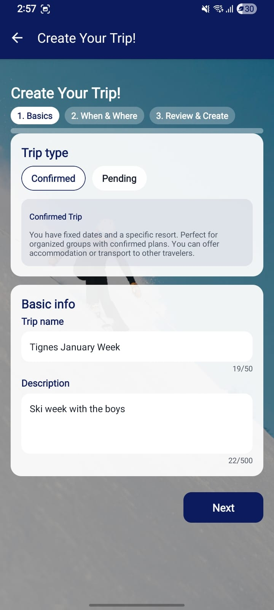
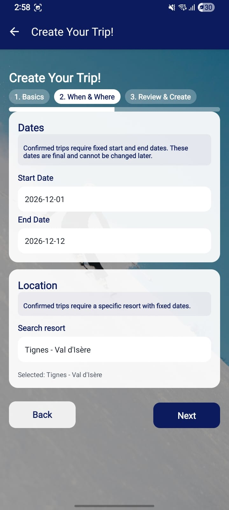
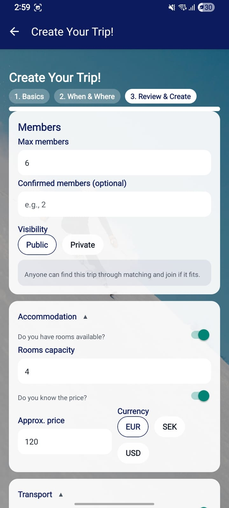
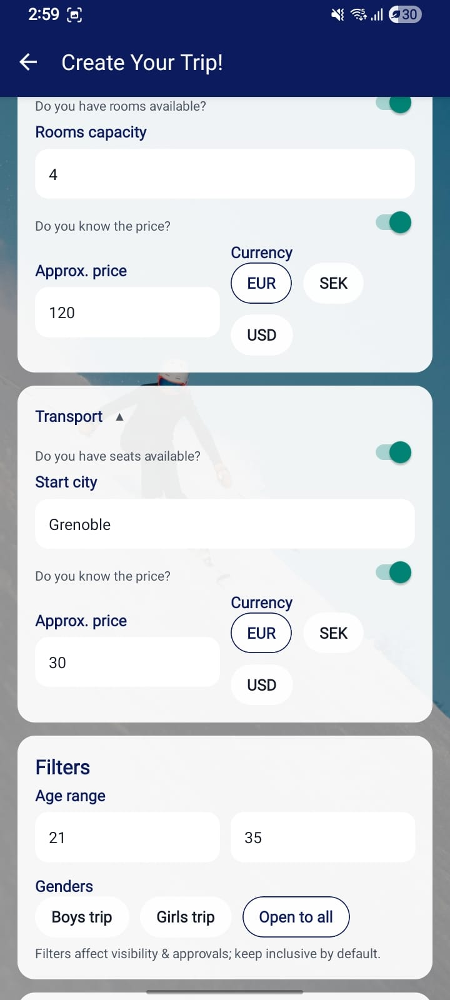
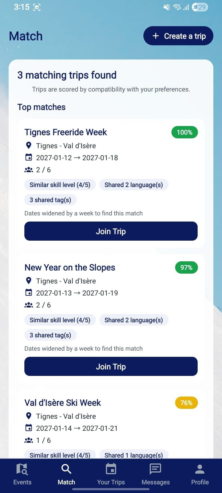
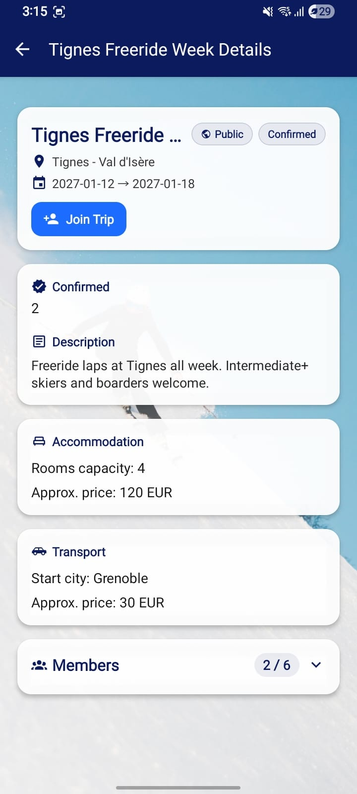
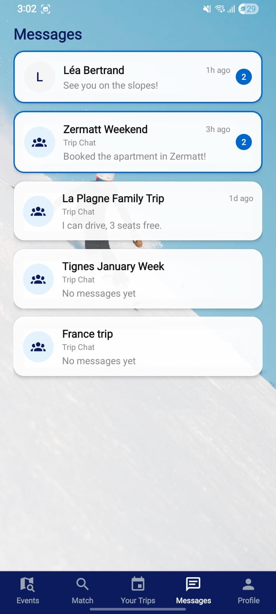
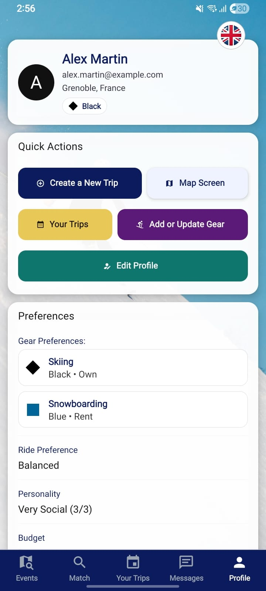

FrostLink
Project Description
FrostLink is a mobile app for skiers and snowboarders: you pick a trip and it puts you with people whose level, languages, budget and days line up. I interned on it at Tanit Consulting AB for nine weeks, July 1st to August 31st 2026, and stayed part time afterwards. Three versions went out while I was there, 1.1.2 through 1.1.4.
I basically ended up touching everything in the app, we had tickets spanning bug reports to full on features, notably, I worked on the matching engine that matched skiers to trips created by other skiers, the Firestore security rules as when I started my work we didn't have any, and I also ended up creating an agentic review workflow as each ticket needed its own PR, and it needed to be reviewed by each team member before it can be merged into main.
The Matcher
The matcher I picked up answered yes or no. It compared you against whoever was already on the trip and returned a decision, which is fine when the answer is obvious and tells you nothing when it isn't, and most of the time it isn't.
I rebuilt it as a weighted score over seven dimensions: skill at 30, language at 20, then it moved on to group preferences: budget, ride style, personality and distance, with a network bonus for skiers belonging to the same network. The dimensions don't share a unit, so each one is normalised to 0..1 before its weight applies.
The search around it widens in steps: exact resort and dates, then dates plus or minus seven days, then radius at 50, 100, 200 and 400 km, then a last pass that drops the location and the age and gender filters. It stops once five results sit at or above the 35 percent score floor. Anything below the floor still comes back, sorted behind the recommended ones and marked as such.
The Rules
As mentioned when I first started work on the project, it had no security rules, and it took a lot of trial and error to be able to introduce them in, I had to make sure the app behaved correctly with the new rules, and I had to do thorough testing with an emulator to achieve that. I also had to coordinate with my other teammates so that their work was still compatible with the new rules that were being introduced. By the end it was 387 lines, deny by default, every operation checking collection, ownership and membership, with about 150 emulator checks standing behind it.
Reviews, and Piste
Every single ticket that we worked on went on its own branch and PR, and had to be reviewed, and approved by everyone before it could make its way into the main branch, this was tedious to do, especially with a lot of tickets, and the schema of the app drifting daily, it became hard to keep track of all the open PRs and became even harder to maintain a good review quality, my reviews missed a lot of things and were all over the place. And so I wrote Piste an opencode plugin/workflow of sorts that'd pull the PR, go thoroughly across the changes, and dispatched reviewers and verifiers across all its findings, I'd also have to test the branch locally by running the app, that way we can guarantee that code, UI, and UX are all good before we approve it.
Piste ran on 41 of my 48 review passes inside the internship window. Across my 61 passes on the repo, 27 ended in an approval, 22 in a change request and 12 in comments only. It carried matching v2, the trip types rework, the score floor and the security rules test suite.
Stack
React Native, Expo, TypeScript, Firebase (Auth, Firestore, Cloud Functions), Git and GitHub review.
Screenshots







